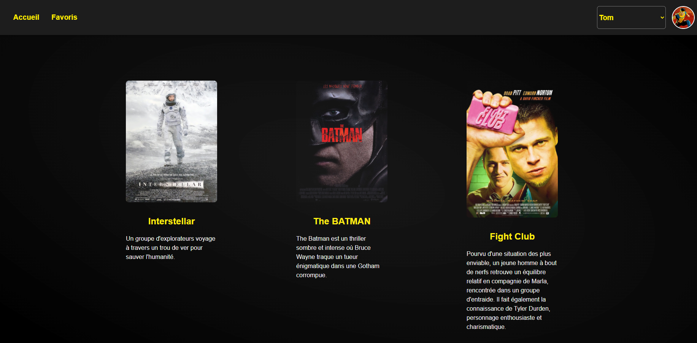
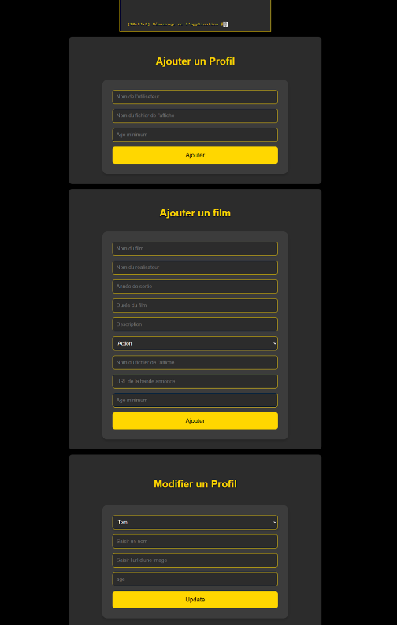

Site Web de Streaming
But du projet
L'objectif de ce projet était de concevoir et développer un site web de streaming de type "Netflix" entièrement fonctionnel. Le site devait être relié à une base de données MySQL pour gérer les utilisateurs, les films, les séries et les catégories, avec un back-end en PHP pour gérer toute la logique.
Voir le site (Principal) Voir le site (RTS)Mon explication et ma démarche
Le projet a été divisé en trois parties principales : le back-end, le front-end et le panneau d'administration.
1. Back-end (PHP & MySQL)
La première étape a été la modélisation et la création de la base de données MySQL pour stocker les informations sur les utilisateurs (avec mots de passe hachés), le catalogue de médias (films, séries, épisodes) et les genres. J'ai ensuite développé une API en PHP pour gérer les connexions, l'inscription, et pour exposer les données du catalogue au front-end de manière sécurisée.
2. Front-end (HTML, CSS, JavaScript)
L'interface utilisateur a été développée en HTML, CSS et JavaScript pur. J'ai créé un design sombre (dark mode) inspiré des plateformes de streaming modernes. Le JavaScript est utilisé pour appeler l'API PHP, récupérer les listes de films et les afficher dynamiquement sur la page, permettant une navigation fluide sans rechargement.
3. Panneau d'Administration (PHP)
Pour gérer le contenu du site, j'ai développé une interface d'administration simple. Cette page, également en PHP, permet aux administrateurs de se connecter et d'effectuer des opérations CRUD (Create, Read, Update, Delete) directement sur la base de données. Il est ainsi possible d'ajouter de nouveaux films, de modifier les informations d'un profil utilisateur ou d'ajouter de nouveaux profils.
